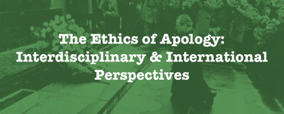

同声传译 | 既往不咎？“向同性恋道歉”中的历史（下）——克利佩特的历史与故事
往期回顾：
既往不咎？“向同性恋道歉”中的历史（上）——被抹除的历史 （三）
To Forgive and Forget? Homonationalism,
Hegemony, and History in the Gay Apology
既往不咎？“向同性恋道歉”中的
同性恋民族主义、霸权主义与历史
[本文发表自论坛—道歉伦理学：跨学科&跨民族视角，作者Steven Maynard]

[道歉伦理学：跨学科&跨民族视角]
前文回顾：… 但名誉恢复也可以更普遍地意味着恢复一个人的健康或正常的生活，名誉恢复所暗指的正常化一面困扰着我。在酷儿的过去能够呈现在全国面前，在酷儿接受道歉之前，酷儿们必须被恢复和被正常化。我们可以在埃弗雷特·克利佩特 (Everett Klippert)的例子中看到这一点。
第四部分
历史 (History) （下）——埃弗雷特·克利佩特的历史与故事
易碧森在他对克利佩特的第一次描述中，首先承认克利佩特不是“圣人”。20世纪60年代初，克利佩特住在卡尔加里，是一名公共汽车司机。我们了解到，“他和十几岁的青少年勾搭上了……他愿意出几块钱，让他们给他打飞机，一般来说，所有的服务都可以提供。”我们进一步了解到，克利佩特喜欢在拳击和摔跤比赛中闲逛，还参观了当地的游泳池。他还免费让年轻人上车，甚至时不时地塞给他们两美元，以换取他们以后的帮助。
克利佩特在首次严重猥亵罪刑满释放后，搬到了新泽西州的派恩波因特(Pine Point)，在那里他找到了一份在Cominco铅锌矿当机械师的工作。克利佩特有一辆车，“年轻人喜欢开着它去兜风。他们会找到一条偏僻的路，喝杯啤酒，然后开始交谈，谈话转向性，”最终，克里佩特会建议他们一起手淫。[68]现在看看在同性恋道歉的背景下，有关克利佩特案件的后续报道发生了什么。
我们被告知，克利佩特唯一的罪行是他“找男人做爱”;他在监狱里呆过一段时间“因为他拒绝停止和男人发生性关系”;他被判无限期监禁，原因是“多次与其他男性发生性关系”。甚至在易碧森的第一篇文章的结尾，克利佩特已经变成了“一个为了性而寻找其他男人的男人”。[69]青少年、金钱的交换、乘坐公共汽车和汽车，以及同性恋的诱惑仪式，都从故事中消失了。

[图片来源：https://www.huffingtonpost.ca]
让我说清楚:我并不是在暗示克利佩特是一个恋童癖者，或者是强迫他的伴侣这么做的。没有证据表明这一点。相反，在1965年出版的《松点矿工通讯》(Pine Point miners)中，有一篇题为《来自汤姆的帽子下》(From Under Tom’s Hat)的文章，配以一顶手绘安全帽，作者写道:“感谢埃夫·克利佩特，他善意地让一个人搭了顺风车。”[70]在许多方面，克利佩特的性生活听起来与本世纪早期我在自己的研究中发现的许多案例极为相似。然而，工人阶级男性与青年男性之间发生的性关系中体现了一种非常明显的道德运作机制，然而在新闻报导对克利佩特“与男人之间的性”的重新描述中，这种道德机制却渐渐消失了。[71]为什么会这样?
如在易碧森简介的开头，克利佩特“不是一个圣人”，但是最终他成了一名“伟大的殉道者”。在这期间，我们了解到克利佩特后来娶了一个女人(这提醒我们，在一个人的一生中，‘同性恋’这一术语无法捕捉到亲密关系的本质可以发生变化，更不用说几个世纪了)。他被一个充满爱的家庭包围着，“他的过去无人提及”，他“继续过着完美幸福的生活”。这个故事听起来很像之前引用的故事，一个被加拿大政府摧毁的酷儿生活通过婚姻和家庭(在这个例子中是异性恋)重新变得完整。它被称为“漫长而又苦乐参半的救赎之路”，“恢复埃弗雷特·克利佩特的名誉”[72]。
克利佩特（名誉）的恢复在多大程度上取决于他对自己早年性生活的淡化或不提?救赎在多大程度上取决于他远离工薪阶层的同性恋关系呢？在这样的关系中，年轻男性和以性换取金钱、乘车和酗酒是最重要的因素。
1969年以前的其他案件是否也可以采取类似的做法?我能不能挑选那些最容易被改造成适合道歉的案例，而把那些“不值得的”东西留在档案里?也许可以。但我对恢复这些奇怪的过去不感兴趣。这在历史上是有问题的，对我来说，在政治上也令人不快。当同性恋活动人士要求克利佩特讲述自己的故事时，他拒绝了，也拒绝了参加自豪游行的邀请。他从未要求同性恋运动为他提供救赎。
他仍在世的家人似乎对他的名誉恢复很满意，但我想知道克利佩特本人的看法。2001年，克利佩特的遗孀说:“我认为在你无法确切了解他的感受时，提起过去是不对的。”[73]她的评论直击历史事件的伦理核心。我们无法确切地知道，在我的研究中出现的近800名男性中，是否有人希望记者、律师或历史学家恢复名誉，并收到总理的道歉。然而，不管你喜不喜欢，恢复和道歉正在进行中。
从政治上讲，对同性恋过去的名誉恢复就像如今的同性恋企业主和协会呼吁清除同性恋社区的街头浪人和性工作者一样，只不过它针对的是历史。这是一场清理行动，一场对过去的扫荡——把它打扮得漂漂亮亮的，让它在全国道歉的舞台上显得体面。许多年前，盖尔·鲁宾(Gayle Rubin)就曾警告说，不要制定同性恋政治策略，将自己的小圈子扩大一段时间，而那些身处社会边缘、最被边缘化、最受歧视的人却只能坐以自毙。[74]
在同性恋道歉的背景下，这个有特别影响力的小圈子将如何被描绘? 对于《报告》来说，如果使得同性恋者获罪的行为对于当时的异性恋者是合法的话，那么道歉和赦免应该扩展到同性恋者。然而，这将一种异性恋正统主义的定义与性行为标准应用到了酷儿过去及其独特的性文化上。这意味着下列人将被排除在外：通常的同性恋嫌疑人:那些隔代相爱的人;用性来换取金钱或福利的人;在公共场所发生性行为的;任何年龄段追求性爱的年轻人。
正如加拿大政府曾经认为有必要清除政府的酷儿人群一样，现在政府也有必要通过道歉来清除其过去行为的历史记录。否则，如何保持其目前的形象与政治未来？如何保持其作为少数群体权利、多元和一个具有包容性的加拿大保护者形象?在这里，政府和同性恋议程恰好重合，因为一个以受人尊敬、热爱国家、遵纪守法的同性恋公民/伴侣为基础的同性国家政策(homonational politics)，需要与同性恋和犯罪之间的历史等式保持距离，远离性变态这一污点。
但是，当酷儿与性违法的历史联系脱离时，它还剩下什么呢?如果酷儿能够打破自由包容和霸权融合的唯一方式就是保留这种不可原谅的东西呢?这在一定程度上就是我引用理论家约翰·保罗·里科(John Paul Ricco)想要说明的，他写道:“如果同性恋者原谅了国家对他们的暴力和疏忽，这难道不是放弃了在未来做出所谓不可原谅之事的可能性吗?”[75] 道歉之后，谁来决定哪些酷儿行为是不可原谅的?是遵循和异性恋相同的规范吗？还是确立同性恋伴侣规范呢？
里科提出了一种“酷儿情爱品格”(queer erotic ethos)，以此取代“道歉伦理学”。 里科认为, 道歉将永远是“一种自由伦理学，这种自由伦理学涉及一种有限秩序(restricted economy)，该秩序包含交换与互惠、手段与目的，囊括了具有正统性的以及被正常化的对终结与定局的欲望，这种终结被认为来自于道歉引发的宽恕” 。这种终结被描述为“翻篇”与“展望未来”，而非沉湎于过去。
只要共识性和强制性之间存在区别——其必要性无需解释——那么酷儿情爱品格就有很多可取之处，尤其是，它不像自由主义的道歉，它并不鼓吹坚守过去。里科所称的“无可置疑是酷儿的”、“超越规范和法律”的“剩余情欲”，在历史上也有同类所指。正如我在这里所暗示的，它的证据散落在档案中。女同性恋诗人布伦达·布鲁克斯(Brenda Brooks)用一首诗来拒绝道歉对过去的抹除与对终结的要求，诗中这样描述:
Be assured of this – though they insist
later that we never lived here – be assured
that all about will be the stubborn clutter,
the undeniable record, the burning, wilful
evidence speaking you and me into eternity.[76]
No amount of apologizing, pardoning, expunging, or rehabilitating is ever going to change that
要相信这——尽管后来他们坚持
我们未曾在此生活——要相信
这一切将会成为顽固的杂物堆，
确凿不移的记录，燃烧的、倔强的
永恒诉说着你我故事的证据。[76]
再多的道歉、赦免、抹除或名誉恢复都不会改变这一点
- 史蒂文·梅纳德(Steven Maynard)是一位历史学家、同性恋活动家。他住在金斯敦，在女王大学教授性史。
- 本系列由酷儿论坛翻译组志愿者Landy与孑子共同完成。
翻译 by Landy
校译 by 孑子
参考文献详见原文
全文完
阅读原文请点击左下角链接
To Forgive and Forget? Homonationalism, Hegemony, and History in the Gay Apology
既往不咎？“向同性恋道歉”中的同性恋民族主义、霸权主义与历史